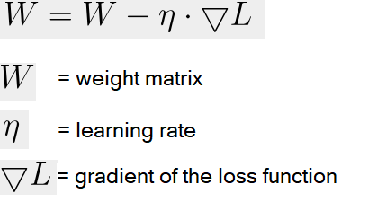
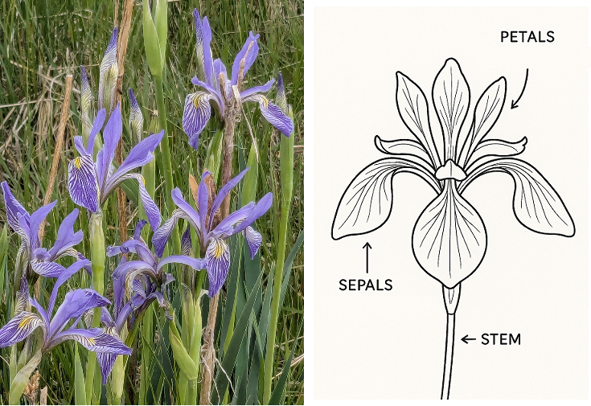

Machine Learning
Developing a machine learning library or application involves tasks such as numerical computation, matrix operations, iteration and optimization (endless trial and error), classification and clustering procedures, and sometimes Parallel Computation. It requires not just skillful programming but also a deep understanding of the underlying mathematical and statistical principles.
This section investigates how you might get started with machine learning processes.
Libraries
Here are some Boost libraries that could be helpful for the supporting tasks:
-
Boost.Numeric/ublas : This is Boost’s library for linear algebra. It provides classes for vectors and matrices and operations on them, which are fundamental in many Machine Learning Algorithms.
-
Boost.Multiprecision: In some machine learning tasks, especially those involving large datasets or sensitive data, high-precision arithmetic can be necessary. Boost.Multiprecision can provide this functionality.
-
Boost.Math: This library contains many mathematical functions and utilities, some of which are likely to be useful in machine learning, such as statistical distributions and special functions.
-
Boost.Random: Random number generation is often necessary in machine learning, for tasks like initializing weights, shuffling data, and stochastic gradient descent. Boost.Random can provide this functionality.
-
Boost.Compute: For accelerating computations using GPUs or other OpenCL devices, you might find this library useful.
-
Boost.Thread or Boost.Fiber: These libraries can be useful for parallelizing computations, which can significantly speed up many Machine Learning Algorithms.
-
Boost.Graph: For Machine Learning Algorithms that involve graph computations (like some forms of clustering, graphical models, or neural network architectures), Boost.Graph could be useful.
-
Boost.PropertyTree or Boost.Spirit: These libraries can be useful for handling input and output, such as reading configuration files or parsing data.
-
Boost.Gil : A library designed for image processing, offering a flexible way to manipulate and process images.
-
Boost.Filesystem : This library provides a portable way of querying and manipulating paths, files, and directories.
- Note
-
The code in this tutorial was written and tested using Microsoft Visual Studio (Visual C++ 2022, Console App project) with Boost version 1.88.0.
Machine Learning Algorithms
Here are some widely used and robust algorithms, each having its own strengths and suitable applications. The best way to identify the "most robust" algorithm is through experimentation: try multiple models and select the one that performs best on your specific task. Also, keep in mind that data quality and the way you pre-process and engineer your features often matter more than the choice of algorithm.
-
Linear Regression / Logistic Regression: These are simple yet powerful algorithms for regression and classification tasks respectively. They’re especially useful for understanding the influence of individual features.
-
Decision Trees / Random Forests: Decision trees are simple to understand and visualize, and can handle both numerical and categorical data. Random forests, which aggregate the results of many individual decision trees, often have better performance and are less prone to overfitting (1).
-
Support Vector Machines (SVM): SVMs are effective in high dimensional spaces and are suitable for binary classification tasks. They can handle non-linear classification using what is known as the kernel trick (2).
-
Gradient Boosting Machines (like XGBoost and LightGBM): These are currently among the top performers for structured data (usually, table-form data), based on their results in machine learning competitions.
-
Neural Networks / Deep Learning: These models excel at tasks involving unstructured data, such as image recognition, natural language processing, and more. Convolutional Neural Networks (CNNs) are used for image-related tasks, while Recurrent Neural Networks (RNNs), Long Short-Term Memory (LSTM) units, and Transformers are used for sequential data like text or time series.
-
K-Nearest Neighbors (KNN): This is a simple algorithm that stores all available cases and classifies new cases based on a similarity measure (distance functions). It’s used in both classification and regression.
-
K-Means: This is a widely-used clustering algorithm for dividing data into distinct groups.
Sample of High-Precision Matrix Multiplication
The following sample demonstrating the use of Boost.Numeric/ublas for matrix operations and Boost.Multiprecision for high-precision arithmetic (ensures 50-digit precision for matrix calculations). This is useful in machine learning applications where precision is critical, such as when dealing with ill-conditioned matrices or when high numerical accuracy is needed.
Randomized values are commonly used in machine language algorithms, such as Stochastic Gradient Descent (Neural networks and logistic regression), Monte Carlo simulations (simulating stochastic processes like Bayesian inference or Markov chains (3)), and neural network weight initialization. So we’ll also engage the features of Boost.Random.
#include <boost/numeric/ublas/matrix.hpp>
#include <boost/numeric/ublas/io.hpp>
#include <boost/multiprecision/cpp_dec_float.hpp>
#include <boost/random.hpp>
#include <boost/random/random_device.hpp>
namespace ublas = boost::numeric::ublas;
namespace mp = boost::multiprecision;
namespace br = boost::random;
int main() {
// Define high-precision floating-point type (50 decimal places)
using high_prec = mp::cpp_dec_float_50;
// Define 3x3 matrices
ublas::matrix<high_prec> A(3, 3), B(3, 3), C(3, 3);
// Random number generation (high-precision floating-point)
br::random_device rd; // Seed from system entropy
br::mt19937 gen(rd()); // Mersenne Twister RNG
br::uniform_real_distribution<double> dist(0.0, 1.0); // Uniform distribution [0,1]
// Fill matrices A and B with random values
for (std::size_t i = 0; i < A.size1(); ++i) {
for (std::size_t j = 0; j < A.size2(); ++j) {
A(i, j) = dist(gen); // Random value between 0 and 1
B(i, j) = dist(gen);
}
}
// Perform matrix multiplication: C = A * B
C = prod(A, B);
// Print results
std::cout << "Matrix A (random values):\n" << std::setprecision(51) << A << "\n\n";
std::cout << "Matrix B (random values):\n" << std::setprecision(51) << B << "\n\n";
std::cout << "Result of A * B:\n" << std::setprecision(51) << C << "\n";
return 0;
}Running the code should give you output similar to the following:
Matrix A (random values):
[3,3]((0.070812058635056018829345703125,0.80709342076443135738372802734375,0.6618001046590507030487060546875),(0.849498252384364604949951171875,0.95166688528843224048614501953125,0.8414736413396894931793212890625),(0.732556092552840709686279296875,0.607468723319470882415771484375,0.10045330529101192951202392578125))
Matrix B (random values):
[3,3]((0.8722223858349025249481201171875,0.7344769672490656375885009765625,0.66293510119430720806121826171875),(0.36406232439912855625152587890625,0.86651482223533093929290771484375,0.35279963747598230838775634765625),(0.75558476778678596019744873046875,0.78821337711997330188751220703125,0.7253504456020891666412353515625))
Result of A * B:
[3,3]((0.855642247899371810907712815330583566719724331051111,1.27300793356359748150765862084732304992940044030547,0.811723066325901586521348457514690721836814191192389),(1.72322211665940665047775867679824557399115292355418,2.11183114262540423141214021574008086190588073804975,1.50927322274462834299961835893277850573213072493672),(0.936009285567514438288188455272731403056241106241941,1.14360486900502322343527519810102432984422193840146,0.772815742467169064793160171422670146057498641312122))Train a Model with Stochastic Gradient Descent
Stochastic Gradient Descent (SGD) is an optimization algorithm used to update model parameters (often called "weights") in machine learning by minimizing the error function (usually called "loss").
A common weight update rule is:

Neural networks train with SGD and the many variants of the algorithm (such as Adam, RMSprop, and the alternative Batch Gradient Descent (4)). This approach is efficient for big data and real-time learning.
The following code shows a linear model of y = w * x + b being trained to fit synthetic data with some added noise.
#include <boost/numeric/ublas/vector.hpp>
#include <boost/numeric/ublas/io.hpp>
#include <boost/random.hpp>
namespace ublas = boost::numeric::ublas;
using Vector = ublas::vector<double>;
// Create synthetic training data: y = 2x + 1 + noise
void generate_data(std::vector<std::pair<double, double>>& data, int n) {
boost::random::mt19937 rng;
boost::random::uniform_real_distribution<> x_dist(0.0, 10.0);
boost::random::normal_distribution<> noise(0.0, 1.0);
for (int i = 0; i < n; ++i) {
double x = x_dist(rng);
double y = 2.0 * x + 1.0 + noise(rng); // true model + noise
data.emplace_back(x, y);
}
}
int main() {
std::vector<std::pair<double, double>> data;
generate_data(data, 100); // 100 training samples
double w = 0.0; // weight
double b = 0.0; // bias
double learning_rate = 0.01;
int epochs = 100;
boost::random::mt19937 rng;
boost::random::uniform_int_distribution<> index_dist(0, data.size() - 1);
for (int epoch = 0; epoch < epochs; ++epoch) {
// SGD: pick one random point
auto [x, y_true] = data[index_dist(rng)];
double y_pred = w * x + b;
double error = y_pred - y_true;
// Update parameters
w -= learning_rate * error * x;
b -= learning_rate * error;
if (epoch % 10 == 0) {
std::cout << "Epoch " << epoch << ": w=" << w << ", b=" << b << ", error=" << error << "\n";
}
}
std::cout << "\nTrained Model: y = " << w << " * x + " << b << "\n";
return 0;
}Running the code should give you output similar to the following:
Epoch 0: w=1.51034, b=0.184796, error=-18.4796
Epoch 10: w=2.05504, b=0.293644, error=-1.20787
Epoch 20: w=2.15505, b=0.327562, error=0.9483
Epoch 30: w=2.13036, b=0.345799, error=-1.19758
Epoch 40: w=2.10543, b=0.340667, error=-0.0997447
Epoch 50: w=2.12241, b=0.352897, error=-0.0906088
Epoch 60: w=2.0156, b=0.333943, error=0.738856
Epoch 70: w=2.02403, b=0.369294, error=1.36926
Epoch 80: w=2.17905, b=0.411506, error=-0.849716
Epoch 90: w=2.1482, b=0.430549, error=-0.839941
Trained Model: y = 2.11625 * x + 0.455491Classify Data using K-Means Clustering
K-Means Clustering is a classification system to group data points into clusters. The statistical functions of Boost.Math measure Euclidean distances that are the basis of K-Means clustering, which is a centroid-based clustering algorithm that partitions data into K clusters based on the nearest mean (centroid).
The clustering algorithm goes through the following cycle:
-
Randomly initialize K centroids
-
Assigns points to the nearest centroid
-
Recalculates centroids
-
Repeats (go back to step 2) until convergence
First let’s download a real dataset, the Iris data contains around 150 entries in the format: sepal_length, sepal_width, petal_length, petal_width, species.
Download Iris data in CSV format.
The file should look like the following:
sepal_length,sepal_width,petal_length,petal_width,species
5.1, 3.5, 1.4, 0.2, setosa
4.9, 3.0, 1.4, 0.2, setosa
4.7, 3.2, 1.3, 0.2, setosa
...
7.0, 3.2, 4.7, 1.4, versicolor
6.4, 3.2, 4.5, 1.5, versicolor
6.9, 3.1, 4.9, 1.5, versicolor
...
6.3, 3.3, 6.0, 2.5, virginica
5.8, 2.7, 5.1, 1.9, virginica
7.1, 3.0, 5.9, 2.1, virginicaFor reference:

Photo:V.Foss-Turcan
Save the Iris file to your local computer, and update the following code with the path to it:
#include <fstream>
#include <boost/numeric/ublas/vector.hpp> // Boost linear algebra: vector, matrix, etc.
#include <boost/random.hpp> // Boost Random library (random_device, mt19937, distributions)
#include <boost/random/random_device.hpp> // Ensures random_device is available
namespace br = boost::random; // Alias for convenience
using namespace boost::numeric::ublas; // For uBLAS vector<>
using DataPoint = vector<double>; // A single data point = 4 numeric features
using Cluster = std::vector<DataPoint>; // A cluster = collection of data points
// Constants for the Iris dataset and K-Means parameters
constexpr size_t FEATURES = 4; // Number of features per sample (Iris = 4)
constexpr size_t K = 3; // Number of clusters (3 Iris species)
constexpr size_t MAX_ITER = 100; // Max number of K-Means iterations
// -----------------------------
// Load data from CSV file
// -----------------------------
std::vector<DataPoint> load_iris_csv(const std::string& filename) {
std::ifstream file(filename);
std::vector<DataPoint> data;
std::string line;
if (!file.is_open()) {
throw std::runtime_error("Could not open file.");
}
// Skip header line (contains column names)
std::getline(file, line);
// CSV format: sepal_length, sepal_width, petal_length, petal_width, species
while (std::getline(file, line)) {
std::stringstream ss(line);
std::string token;
DataPoint point(FEATURES);
// Parse first 4 numeric values
for (size_t i = 0; i < FEATURES; ++i) {
if (!std::getline(ss, token, ',')) break;
point(i) = std::stod(token);
}
// Only add valid 4-element vectors
if (point.size() == FEATURES)
data.push_back(point);
}
return data;
}
// -----------------------------
// Euclidean distance function
// -----------------------------
double euclidean_distance(const DataPoint& a, const DataPoint& b) {
double sum = 0.0;
for (size_t i = 0; i < a.size(); ++i)
sum += std::pow(a[i] - b[i], 2);
return std::sqrt(sum);
}
// -----------------------------
// Find index of nearest centroid
// -----------------------------
size_t closest_centroid(const DataPoint& point, const std::vector<DataPoint>& centroids) {
double min_dist = std::numeric_limits<double>::max();
size_t index = 0;
for (size_t i = 0; i < centroids.size(); ++i) {
double dist = euclidean_distance(point, centroids[i]);
if (dist < min_dist) {
min_dist = dist;
index = i;
}
}
return index;
}
// -----------------------------
// Compute centroid (mean of cluster points)
// -----------------------------
DataPoint compute_centroid(const Cluster& cluster) {
DataPoint centroid(FEATURES, 0.0);
if (cluster.empty()) return centroid;
for (const auto& point : cluster)
centroid += point; // Sum all data points in cluster
return centroid / static_cast<double>(cluster.size()); // Average each dimension
}
// -----------------------------
// Initialize centroids randomly
// -----------------------------
std::vector<DataPoint> init_random_centroids(const std::vector<DataPoint>& data, size_t k) {
br::random_device rd; // Hardware entropy source
br::mt19937 gen(rd()); // Mersenne Twister engine
br::uniform_int_distribution<> dist(0, data.size() - 1); // Random index range
std::vector<DataPoint> centroids;
for (size_t i = 0; i < k; ++i)
centroids.push_back(data[dist(gen)]); // Pick random samples as initial centroids
return centroids;
}
// -----------------------------
// K-Means clustering algorithm
// -----------------------------
void kmeans(const std::vector<DataPoint>& data, size_t k) {
auto centroids = init_random_centroids(data, k);
std::vector<size_t> assignments(data.size(), 0); // Each data point’s assigned cluster
for (size_t iter = 0; iter < MAX_ITER; ++iter) {
bool changed = false;
std::vector<Cluster> clusters(k); // One cluster per centroid
// Step 1: Assign each point to the closest centroid
for (size_t i = 0; i < data.size(); ++i) {
size_t idx = closest_centroid(data[i], centroids);
if (idx != assignments[i]) {
changed = true; // Track if any point changed cluster
assignments[i] = idx;
}
clusters[idx].push_back(data[i]);
}
// Stop early if clusters no longer change
if (!changed) {
std::cout << "\nConverged after " << iter << " iterations.\n";
break;
}
// Step 2: Recompute centroids as cluster means
for (size_t i = 0; i < k; ++i)
centroids[i] = compute_centroid(clusters[i]);
}
// -----------------------------
// Output cluster summaries
// -----------------------------
for (size_t i = 0; i < k; ++i) {
std::cout << "Cluster " << i + 1 << ": "
<< std::count(assignments.begin(), assignments.end(), i)
<< " samples\n";
}
}
// -----------------------------
// Main program
// -----------------------------
int main() {
try {
// Load the Iris dataset (CSV path required)
auto data = load_iris_csv("<path>\\iris.csv");
std::cout << "Loaded " << data.size() << " samples.\n";
// Run K-Means clustering
kmeans(data, K);
}
catch (const std::exception& e) {
// Handle file or numeric parsing errors gracefully
std::cerr << "Error: " << e.what() << "\n";
return 1;
}
return 0;
}Running this code should give you:
Loaded 150 samples.
Converged after 3 iterations.
Cluster 1: 22 samples
Cluster 2: 31 samples
Cluster 3: 97 samples- Note
-
Due to the random element, running the code repeatedly can give slightly different results, typically from 3 to 5 iterations and varying sample sizes.
Predict Future Values of Time Series Data
The following code tries to predict the next value in a 1D time series, using a simplified Transformer-style self-attention mechanism (5).
#include <boost/numeric/ublas/vector.hpp>
#include <boost/numeric/ublas/matrix.hpp>
#include <boost/random.hpp>
namespace ublas = boost::numeric::ublas;
using Vector = ublas::vector<double>;
using Matrix = ublas::matrix<double>;
// Create a simple sine wave time series
std::vector<double> generate_time_series(int length) {
std::vector<double> series(length);
for (int i = 0; i < length; ++i)
series[i] = std::sin(i * 0.1) + 0.1 * std::sin(i * 0.5);
return series;
}
// Apply scaled dot-product attention on a sequence matrix
Vector self_attention(const Matrix& sequence) {
const std::size_t seq_len = sequence.size1();
const std::size_t dim = sequence.size2();
Vector attention_output(dim, 0.0);
// Self-attention weights using dot-product of each timestep with others
for (std::size_t t = 0; t < seq_len; ++t) {
double score = 0.0;
for (std::size_t j = 0; j < seq_len; ++j) {
for (std::size_t d = 0; d < dim; ++d)
score += sequence(t, d) * sequence(j, d);
}
score /= (seq_len * dim); // normalize
for (std::size_t d = 0; d < dim; ++d)
attention_output[d] += score * sequence(t, d);
}
return attention_output;
}
int main() {
const int sequence_length = 10;
const int embedding_dim = 4;
const int total_samples = 200;
// Generate synthetic sine wave data
auto series = generate_time_series(total_samples);
// Simple random projection into embedding space
boost::random::mt19937 rng;
boost::random::uniform_real_distribution<> dist(-1.0, 1.0);
Matrix embedding(sequence_length, embedding_dim);
for (std::size_t i = 0; i < sequence_length; ++i)
for (std::size_t j = 0; j < embedding_dim; ++j)
embedding(i, j) = dist(rng);
// Feed input sequence through attention
for (int t = 0; t < total_samples - sequence_length - 1; ++t) {
Matrix seq_matrix(sequence_length, embedding_dim);
for (int i = 0; i < sequence_length; ++i) {
for (int d = 0; d < embedding_dim; ++d)
seq_matrix(i, d) = series[t + i] * embedding(i, d); // embed input
}
Vector context = self_attention(seq_matrix);
double prediction = ublas::sum(context) / embedding_dim; // crude projection to scalar
double target = series[t + sequence_length];
std::cout << "Predicted: " << prediction << ", Target: " << target << '\n';
}
return 0;
}Predicted: 0.0469448, Target: 0.745579
Predicted: 0.06675, Target: 0.820653
Predicted: 0.0893931, Target: 0.904098
Predicted: 0.115752, Target: 0.98507
Predicted: 0.147007, Target: 1.05115
Predicted: 0.18403, Target: 1.09129
Predicted: 0.226992, Target: 1.09851
Predicted: 0.274918, Target: 1.07151
....Next Steps
Machine learning is a challenging task. This section just touched on some algorithms and processes that might be considered. Investigating decision trees, neural networks, different classification approaches, linear regression algorithms, all might help in gaining a programmers understanding of the daunting issues involved in making smart decisions, and getting smarter over time!
Footnotes
(1) Overfitting in the context of machine learning refers to a model that has been trained too well on the training data, to the point where it has started to memorize the noise or outliers in the data rather than generalizing from the underlying patterns or trends. As a result, the model will perform very well on the training data, but poorly on new, unseen data (that is, it will have poor generalization performance). To mitigate overfitting, techniques such as cross-validation, regularization, pruning, or early stopping are often used. Another common strategy is to increase the amount of training data so the model can learn more generalized features.
(2) The kernel trick is a method used in machine learning to apply a linear classifier to data that is not linearly separable. It works by mapping the original input features into a higher-dimensional space where a linear classifier can be used to separate the data. This mapping is done using a function known as a kernel function. The "trick" part of the kernel trick comes from the fact that the kernel function allows us to operate in the higher-dimensional space without explicitly computing the coordinates of the data in that space. Instead, the kernel function computes only the inner products between the images of all pairs of data in the higher-dimensional space.
(3) Bayesian inference is used to calculate a probability for a hypothesis (using Bayes theorem), based on existing evidence, and then update it as more data becomes available. This approach has proved to be robust as it does not require the sample size to be known in advance, and has a wide range of applications. A Markov chain describes a sequence of possible events, where the probability of an event occurring in the chain is solely dependent on the previous event. Markov chains are popular in statistical modeling, partly because of the simplification it provides in that only the current state of affairs is important - not any previous history. Markov chain Monte Carlo methods are often used to study probability distributions too complex for analytical methods alone.
(4) Gradient Descent is an optimization algorithm used to minimize a function by iteratively adjusting parameters in the direction of the steepest descent. There are several variations, each with trade-offs. Stochastic Gradient Descent updates model parameters using a single randomly chosen training sample per iteration, making it computationally efficient but introducing high variance in updates, leading to noisy convergence. Batch Gradient Descent, in contrast, computes gradients over the entire dataset before making an update, leading to stable but computationally expensive iterations. A middle ground is Mini-Batch Gradient Descent, which processes small batches of data per iteration, balancing computational efficiency and convergence stability.
To improve upon standard gradient descent, adaptive optimization methods like Adam (Adaptive Moment Estimation) and RMSprop (Root Mean Square Propagation) were developed. RMSprop modifies the learning rate for each parameter based on recent gradient magnitudes, helping it navigate noisy gradients efficiently. Adam combines both momentum (which smooths updates) and adaptive learning rates (adjusting step sizes per parameter), making it one of the most widely used optimizers due to its robustness across different problems. These methods help accelerate convergence and handle sparse or non-stationary gradients better than traditional gradient descent techniques.
(5) A Transformer-style self-attention mechanism is a powerful technique used in modern machine learning models — especially in natural language processing — to allow a model to weigh the importance of different parts of the input data relative to each other. In simple terms, self-attention enables a model to "look at" all elements of a sequence (like words in a sentence or time steps in a series) and determine how much focus each element should get when processing a specific item. For example, in a sentence, the meaning of a word may depend heavily on another word several positions away. The self-attention mechanism calculates attention scores that capture these dependencies, regardless of distance, and transforms the input into a new representation that highlights the most relevant relationships.
The Transformer-style part refers to the architecture introduced in the groundbreaking 2017 paper "Attention Is All You Need" (Vaswani et al), which relies on stacking multiple layers of self-attention and feedforward operations without using recurrent or convolutional components. This approach enables parallel processing and captures complex patterns in data, making it a foundation for models like GPT and BERT.